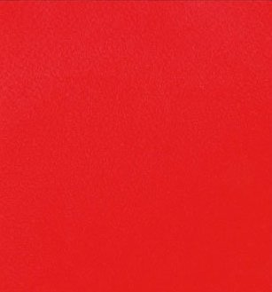

JE SUIS ETUDIANTE A EPITECH !
L’école référence de l'expertise informatique forme depuis 20 ans les experts qui dessineront le monde de demain. Une école accessible à toutes et à tous dès 18 ans Une pédagogie active unique qui forge les personnalités Un écosystème international Des carrières à fort impact. À Epitech, on apprend comme on innove : en testant, en faisant, en avançant, en se trompant… et en recommençant. Une seule méthode : l’autonomie Une seule condition : la motivation Un seul résultat : un métier qui compte, à fort potentiel Les moyens pour y parvenir ? Un réseau immense, des projets par centaines, une expérience à l’étranger, une expertise reconnue et recherchée en entreprise, une vie étudiante dynamique, la participation aux plus grands salons «tech» internationaux, des hubs d’innovation… Cette méthode a fait ses preuves depuis 20 ans : bienvenue dans un monde où l’on apprend différemment ! A
PROPOS
DE
MOI
Laisse
moi
me
présenter:
Je
m'appelle
Farèna
et
j'aime
les
koalas.